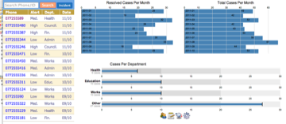

Coconut renders JSON defined forms in a browser and then saves the results to couchdb.
What is it for?
You can use Coconut to create data entry applications that can be used on smart phones and computers. Data is stored on the device. When a network connection is available, the data is automatically synchronized with the server.
A dashboard is available so that the user can track progress.
How does it work?
{kind=link}
Coconut uses CouchDB for data storage and synchronization, Backbone.js for MVC, backbone-couchdb to connect backbone to CouchDB, and D3 for charts.
Coconut can be run on a computer or installed on a mobile phone or tablet. Android-Coconut-MobileFuton is an example that may be used on an Android 10.1” tablet. Android-Tims-MobileFuton is formatted for Android smart phones.
How do I get started?
When the application starts, it displays a list of records with button to forms on the left and charts on the right. The application user interface is described in greater detail in Using Coconut.
May I see it?
Yes, here are some screencasts.
Technical details
Coconut features a built-in form designer - big shout out to the Dimagi folks who created FormDesignerAlpha. Coconut uses a version customized for JSON form export. The form is saved to the CouchDB and may then be used by your application. View the Form Designer page for more information on creating forms.
Coconut uses Backbone.js for its MVC (Model View Controller) framework. All of the backbone models and views have their own file and are in app/models and app/views respectively. app/app.js is responsible for tying it all together.
You can put json forms into the _docs directory and they will be added to your couch when you do a couchapp push.
See the page about Application Design for more information on Coconut form rendering and application flow.
Charts and the use of Jquery promise are described on the charts page.
Gimme a features list!
- Form Designer
- Charts
- Storage and Replication using CouchDB
- Support for mobile phones and tablets
Download
You can download this project in either zip or tar formats.
You can also clone the project with Git by running:
$ git clone git://github.com/vetula/coconut
get the source code on GitHub : vetula/coconut
Credit
Authors: Chris E. Kelley (ckelley@rti.org), Mike McKay (mmckay@rti.org)
Contact: Chris E. Kelley (ckelley@rti.org)